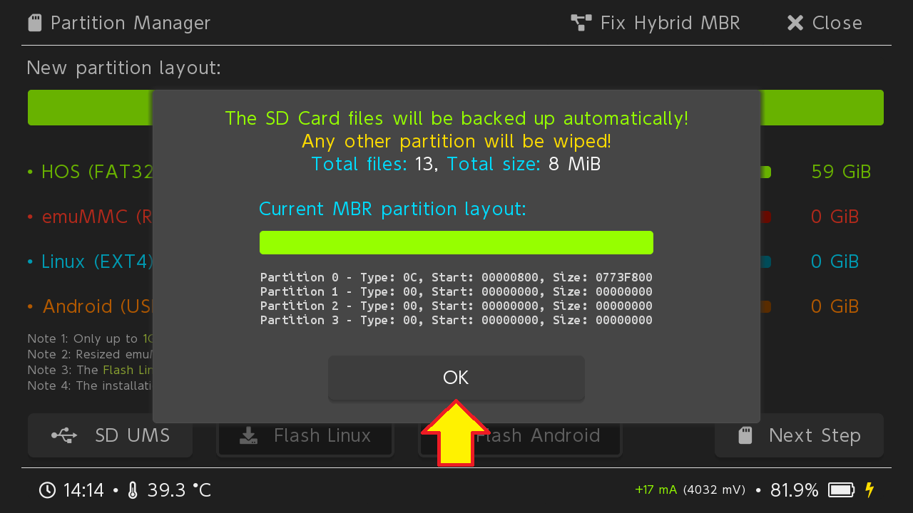

Creazione e gestione emuNAND#

Attraverso questa guida, si andrà a creare una "copia fittizia", chiamata emuNAND (ma anche emuMMC), della memoria interna della switch, chiamata anche sysNAND.
Questa copia sarà creata in modo tale da non compromettere l'effettiva memoria interna della console e per fare in modo di poter continuare a giocare regolarmente online con i propri giochi acquistati.
Per ricapitolare dunque:
- SysNAND: memoria interna effettiva della console con cui si andrà regolarmente online;
- EmuNAND: copia fittizia della memoria interna della console con cui, PER NESSUN MOTIVO AL MONDO (se non con le dovute precauzioni) si dovrà andare online, né togliere mai la modalità aereo. In questa copia della memoria, si andranno ad utilizzare tutti gli homebrew che si vorranno. Tutti i cambiamenti che verranno effettuati su questa copia della memoria, non andranno IN ALCUN MODO ad intaccare la memoria effettiva della console.
Chiariti questi concetti, si può passare alla creazione della emuNAND.
1. Prerequisiti#
PRIMA DI COMINCIARE
PRIMA DI OGNI COSA ASSICURARSI DI CANCELLARE TUTTE LE CONNESSIONI INTERNET PRESENTI NELLA CONSOLE E METTERLA IN MODALITÀ AEREO PER POI SPEGNERLA.
IN TAL MODO, L'EMUNAND CHE SI ANDRÀ A CREARE SARÀ GIÀ IN MODALITÀ AEREO.
Bisogna intanto essere sicuri che la propria console non sia patchata, verificandolo attraverso questa guida, e che si sia in possesso di almeno una copia di backup della sysNAND della propria console, realizzabile attraverso questa guida.
- Una microSD da almeno 64GB, formattata in FAT32 con dimensione cluster 64K (attraverso FAT32GUIFormat se su Windows);
- L'ultima versione di hekate (hekate_ctcaer_x.x.x_Nyx_x.x.x.zip e nyx_usb_max_rate (run once per windows pc).reg );
- Un cavo USB in modo da poter collegare la console al pc, che abbia quindi un'estremità USB Tipo-A e l'altra USB Tipo-C oppure, nel caso si volesse utilizzare il proprio smartphone Android, un cavo con entrambe le estremità USB Tipo-C;
- Un modo per cortocirtuitare il pin 10 del binario del joycon destro; per fare ciò si potrebbe utilizzare una graffetta, un ago, oppure un jig, un piccolo accrocchio da inserire nel binario del joycon destro della console.
IN ASSENZA DI JIG
Nel caso in un cui non si abbia il jig, è possibilie stamparselo da se, attraverso questo link, tramite una stampante 3D oppure, a mali estremi, utilizzare un ago, seguendo la procedura che seguirà.
PER UTENTI ESPERTI: A questo link si possono trovare tutti i metodi alternativi per realizzare un qualcosa che simuli un jig.
2. Preparazione dei file#
2.1 microSD#
Prima di ogni cosa, bisogna formattare la microSD in FAT32, per fare in modo di avere la massima compatibilità con i programmi che si andranno ad utilizzare.
ATTENZIONE!
QUESTA PROCEDURA CANCELLERÀ L'INTERO CONTENUTO DELLA MICROSD. ASSICURASI DUNQUE DI SALVARE ADESSO TUTTO IL CONTENUTO DELLA MICROSD IN UN POSTO SICURO SUL PC.
Dopo aver inserito la microSD nel pc, assicurarsi di individuare CORRETTAMENTE la lettera dell'unità, in quanto servirà per la formattazione.

Avviare il programma guiformat scaricato in precedenza e ci si troverà davanti una schermata come quella che seguirà.
A questo punto, selezionare dal menù Drive la stessa lettera della microSD e come Allocation unit size il numero 65536. La voce Volume label può anche essere lasciata vuota.
ATTENZIONE!
ASSICURARSI DI SELEZIONARE COME LETTERA, NEL MENÙ "DRIVE", LA STESSA LETTERA DELLA MICROSD.
SBAGLIARE LETTERA POTREBBE COMPORTARE ANCHE LA FORMATTAZIONE INTERA DEL VOSTRO PC!
Dopo aver impostato questi parametri, clickare su Start e successivamente su Ok.
Una volta finito, si può tranquillamente chiudere il programma.

NOTA BENE: Se, al momento di formattare la microSD, il programma dovesse dare un errore in cui dice che la risorsa è in uso da un altro processo/servizio, basterà formattare velocemente in NTFS dall'explorer di Windows e poi ripartire con la formattazione tramite GuiFormat.
2.2 hekate#
Estrarre il contenuto del file .zip di hekate precedentemente scaricato all'interno della microSD appena formattata, in modo tale da avere solo la cartella bootloader all'interno. Il file .bin verrà utilizzato successivamente.

3. Modalità RCM & hekate#
Bisogna a questo punto inserire la microSD nella console e metterla in modalità RCM, un particolare stato di funzionamento che permette di inviare (iniettare) i file necessari ad avviare la console.
Per mettere la console in questa particolare modalità bisogna:
- Assicurarsi di avere la console completamente spenta;
- Inserire il jig nel binario del joycon destro della console;
- Tenendo premuto il tasto Volume +, preme una volta il tasto di accensione.
La console sarà adesso in modalità RCM e non darà alcun segno di vita, ed è normale.
IN ASSENZA DI JIG SI PUÒ UTILIZZARE UN AGO
È possibile anche utilizzare un ago, seguendo attentamente la piccola guida riportata nelle immagini che seguono.


3.1 Iniettare hekate#
A questo punto bisogna iniettare hekate, in modo tale da effettuare il backup della NAND. Per fare ciò, a seconda del sistema operativo utilizzato, ci sono diverse vie:
- TegraRcmGui, nel caso in cui si utilizzi Windows;
- Fusée Launcher, nel caso si utilizzi macOS oppure una distro GNU/Linux;
- Rekado, nel caso si utilizzi uno smartphone Android.
- Utilizzando Google Chrome, attraverso il sito internet https://switch.exploit.fortheusers.org/, a prescindere dal sistema operativo utilizzato.
- Installare ed aprire TegraRcmGui, scaricato in precedenza;
- Andare sulla scheda Settings;
- Clickare su Install Driver, che installerà i driver necessari per comunicare con la console;
- Dopo averli installati, andare nella scheda Payload;
- Connettere la console al pc. Il pc dovrebbe a questo punto vedere la console (se questo non succede, ripetere dalla sezione Modalità RCM);
- Una volta connessa, si dovrebbe vedere un'icona verde con scritto RCM OK;
- Selezionare il payload hekate_ctcaer_x.x.x.bin precedentemente scaricato;
- Selezionare Inject Payload;
Nel caso in cui si abbia l'errore RC=-50, riavviare l'applicazione e provare di nuovo.
Se tutto è andato a buon fine, la console dovrebbe avviarsi nell'interfaccia di hekate e sarà possibile alla sezione successiva.
- Aprire un terminale e spostarsi all'interno della cartella del fusee-launcher, scaricato in precedenza;
- Copiare il payload hekate_ctcaer_x.x.x.bin all'interno di questa cartella;
- Connettere la console al pc e deve restare spenta (se dovesse accendersi, ripetere dalla sezione Modalità RCM);
- Lanciare il comando:
$ sudo python3 fusee-launcher.py hekate_ctcaer_x.x.x.bin
Se tutto è andato a buon fine, la console dovrebbe avviarsi nell'interfaccia di hekate e sarà possibile alla sezione successiva.
- Aprire Rekado, scaricato in precedenza;
- Navigare nella sezione Payloads dell'applicazione e garantire l'accesso alla memoria;
- Scorrere la pagina verso il basso, in modo tale da permettere all'applicazione di scaricare eventuali aggiornamenti dei vari payload;
- Connettere la console al telefono (se dovesse accendersi, ripetere dalla sezione Modalità RCM);
- Il telefono dovrebbe notificare il fatto di scegliere Rekado come opzione da usare come predefinita. Accettare e premere OK;
- Dal menù che apparirà selezionare la voce hekate.bin.
Se tutto è andato a buon fine, la console dovrebbe avviarsi nell'interfaccia di hekate e sarà possibile alla sezione successiva.
- Aprire Chrome e recarsi sul sito https://switch.exploit.fortheusers.org/;
- Selezionare direttamente sul sito la voce CTCaer hekate (vx.x.x);
- Connettere la console al PC (se dovesse accendersi, ripetere dalla sezione Modalità RCM);
- Selezionare Do the thing! e sulla schermata del consenso che appare, scegliere APX e premere Connect.
Se tutto è andato a buon fine, la console dovrebbe avviarsi nell'interfaccia di hekate e sarà possibile alla sezione successiva.
4. Creazione della emuNAND#
Se tutto è andato a buon fine, la console dovrebbe avviarsi nell'interfaccia di hekate.
La creazione della emuNAND può essere effettuata in modalità:
- BASATA SU FILE: l'emuNAND verrà creata come insieme di file sulla microSD. In questo modo eventuali backup della emuNAND stessa saranno più facili da gestire, ma bisognerà prestare particolare attenzione a non cancellarla accidentalmente;
- BASATA SU PARTIZIONE: l'emuNAND verrà creata su di una partizione della microSD. In tal modo la velocità complessiva sarà nettamente superiore ma non si avrà più accesso a quella partizione della microSD. Eventuali backup della emuNAND saranno inoltre direttamente gestiti da hekate. Questa modilità risulta essere la più consigliata.
Selezionare emuMMC.
Selezionare Create emuMMC.
Visto che si sta scegliendo quella basata su file, scegliere SD File.
A questo punto partirà il processo di creazione della emuNAND basata su file, la qual cosa potrebbe richiedere svariati minuti. Non appena il processo sarà terminato, si potrà selezionare Close in alto a destra.
Finito il processo, l'emuNAND sarà abilitata in automatico, come si vede dal riquadro rosso. A questo punto, selezionare Close in alto a destra.
Spegnere la console premendo Power Off e nuovamente Power Off.
Adesso che l'emuNAND è stata creata, si può passare a preparae i file necessari per avviare Atmosphère seguendo questa guida.
ATTENZIONE!
VISTO CHE L'EMUNAND È BASATA SU FILE, DOVRETE STARE ATTENTI A NON CANCELLARE, PER NESSUN MOTIVO AL MONDO, LA CARTELLA "emuMMC", DATO CHE CONTIENE I FILE DELLA EMUNAND STESSA.
PENA: PERDERETE TUTTI I DATI DELL'EMUNAND (GIOCHI E SALVATAGGI) E DOVRETE RIFARE DA ZERO QUESTA PROCEDURA.
Selezionare emuMMC.
Selezionare Create emuMMC.
Visto che si sta scegliendo quella basata su partizione, scegliere SD Partition.
Hekate ci notificherà che non è stata trovata alcuna partizione dedicata su cui andare a creare l'emuNAND. Premendo dunque Continue, hekate stesso ci guiderà nel partizionamento.
La prima schermata che apparirà ci avviserà che i file attualmente presenti sulla microSD, verranno momentaneamente conservati (nella RAM, fino ad un massimo di 1 GB) e successivamente ripristinati dopo il partizionamento. Se i file presenti nella microSD dovessero superare la dimensione di 1 GB, vi verrà chiesto di connettere la console al PC e di trasferire i file sul PC.
Premere OK per continuare.

Per creare la partizione, che verrà dedicata unicamente alla emuNAND, spostare il secondo slider verso destra, quello rosso indicato con emuMMC (RAW), fino a scegliere una dimensione a piacere.
Questa dimensione sarà quella che andrà a determinare la "Memoria interna" della console virtuale.
È inoltre possibile, in questo passaggio, andare a creare altre partizioni da dedicare a Linux oppure ad Android. In questa guida verrà creata soltanto una partizione dalla dimensione massima possibile dedicata all'emuNAND.
Spostare dunque lo slider rosso fino a che la dimensione a lato indichi esattamente 29 FULL.
Fatto ciò, selezionare Next Step e, successivamente, Start.
Una volta finito, selezionare OK e poi Close in alto a destra.
La microSD è stata partizionata correttamente, si può dunque passare alla creazione della emuNAND vera e propria.
Selezionare nuovamente Create emuMMC.
Selezionare nuovamente SD Partition.
Selezionare Part 1. Questo andrà a scrivere l'emuNAND sulla partizione da 29 GiB precedentemente creata da hekate stesso.
Il processo prenderà un po' di tempo. Una volta terminato, si potrà selezionare Close in alto a destra.
Finito il processo, l'emuNAND sarà abilitata in automatico, come si vede dal riquadro rosso. A questo punto, selezionare Close in alto a destra.
Spegnere la console premendo Power Off e nuovamente Power Off.
Adesso che l'emuNAND è stata creata, si può passare a preparae i file necessari per avviare Atmosphère seguendo questa guida.
NOTA BENE: nel caso in cui, inserendo la microSD nel PC, questa non venisse letta da Windows, seguire il seguente procedimento:
- Premere col pulsante destro del mouse sul tasto Start;
- Selezionare Gestione disco;
- Ingrandire la finestra, individuare la prima grande partizione della microSD (non quella da 16 MB), chiamata SWITCH SD e premerci sopra con il pulsante destro del mouse;
- Selezionare Cambia lettera e percorso di unità...;
- Selezionare Aggiungi;
- Scegliere una qualsiasi lettera dal menù a tendina sulla destra e premere OK.
5. Extra: Migrazione della emuNAND#
EMUNAND SU FILE / SU PARTIZIONE
NEL CASO IN CUI L'EMUNAND SIA BASATA SU FILE, BASTA SEMPLICEMENTE COPIARE PER INTERO IL CONTENUTO DELLA VECCHIA MICROSD NELLA NUOVA.
NEL CASO IN CUI L'EMUNAND SIA BASATA SU PARTIZIONE, CONTINUARE CON IL PROCEDIMENTO CHE SEGUE.
Nel caso in cui si voglia trasferire la propria emuNAND in una microSD più capiente, è possibile fare il tutto attraverso hekate stesso, attraverso un processo di backup e successivo restore della emuNAND, dalla vecchia microSD alla nuova.
Per procedere alla migrazione servirà:
- L'ultima versione di hekate, reperibile nella sezione 1. Prerequisiti
- Almeno 32 GB di spazio libero nella vecchia microSD.
Fatto ciò, copiare la cartella bootloader sia nella vecchia microSD che nella nuova.
CARTELLA BACKUP GIÀ PRESENTE?
NEL CASO IN CUI SIA GIÀ PRESENTE UNA CARTELLA backup ALL'INTERNO DELLA VECCHIA MICROSD, POTREBBE ESSERE UN BACKUP DELLA SYSNAND FATTO IN PRECEDENZA E MAI CONSERVATO.
PRIMA DI PROCEDERE ASSICURATEVI DI CONSERVARE QUEL BACKUP DA QUALCHE PARTE SUL PC.
FATTO CIÒ, CANCELLATE LA CARTELLA backup DALLA VECCHIA MICROSD, IN QUANTO VERRÀ SOVRASCRITTA DURANTE IL PROCESSO
5.1 Backup della emuNAND#
In questa sezione si andrà a lavorare con la vecchia microSD.
Avviare dunque hekate con uno dei metodi presenti alla sezione 3. Modalità RCM & hekate
Una volta avviato, selezionare Tools.

Selezionare Backup eMMC.

A questo punto è di vitale importanza premere la voce SD emuMMC Raw Partition in basso, in modo tale che accanto spunti la scritta ON.
Come ulteriore conferma adesso, nelle voci di backup, sarà comparsa la scritta "SD".
Fatto ciò si può selezionare la voce SD emuMMC BOOT0 & BOOT1.
Questo backup sarà molto veloce.

Una volta terminato, è possibile tornare al menù precedente selezionando Close in alto a destra.

Assicurandosi sempre che la voce SD emuMMC Raw Partition sia impostata su ON, selezionare adesso la voce SD emuMMC RAW GPP.
Questo backup può richiedere un po' di tempo.

Una volta finito il processo di backup, si può selezionare Close in alto a destra e spegnere la console, così da passare a preparare tutto il necessario per il restore.

5.2 Restore della emuNAND#
In questa sezione si andrà a lavorare con la nuova microSD.
5.2.1 Partizionamento#
Prima di tutto bisogna partizionare la microSD.
Avviare dunque hekate con uno dei metodi presenti alla sezione 3. Modalità RCM & hekate.
Una volta avviato selezionare Tools
Selezionare la voce Partition SD Card in alto a destra.

La prima schermata che apparirà ci avviserà che i file attualmente presenti sulla microSD, verranno momentaneamente conservati (nella RAM, fino ad un massimo di 1 GB) e successivamente ripristinati dopo il partizionamento. Se i file presenti nella microSD dovessero superare la dimensione di 1 GB, vi verrà chiesto di connettere la console al PC e di trasferire i file sul PC.
Premere OK per continuare.

Per creare la partizione dedicata all'emuNAND spostare il secondo slider verso destra, quello rosso indicato con emuMMC (RAW), in modo tale che la dimensione a lato indichi esattamente 29 GiB.
Fatto ciò, selezionare Next Step e, successivamente, Start.

Una volta terminato, dare OK.
5.2.2 Restore#
Si può, a questo punto, copiare interamente il contenuto della vecchia microSD nella nuova microSD, dando l'ok quando vi chiederà di sovrascrivere dei file (saranno quelli di hekate).

Nella nuova microSD spostare i file di backup della emuNAND dalla cartella:
<microSD>/backup/<Numeri&Lettere>
alla cartella:
<microSD>/backup/<Numeri&Lettere>/restore/

Infine, dalla nuova microSD bisogna eliminare il file:
<microSD>/emuMMC/emummc.ini

Inserire adesso la nuova microSD nella console e avviare hekate con uno dei metodi presenti alla sezione 3. Modalità RCM & hekate.
Una volta avviato, selezionare Tools.
Selezionare Restore eMMC.

A questo punto è di vitale importanza premere la voce SD emuMMC Raw Partition in basso, in modo tale che accanto spunti la scritta ON.
Come ulteriore conferma adesso, nelle voci di restore, sarà comparsa la scritta "SD".
Fatto ciò si può selezionare la voce SD emuMMC BOOT0 & BOOT1.
Premere il tasto di Accensione per continuare.

Questo restore sarà molto veloce.
Una volta terminato, è possibile tornare al menù precedente selezionando Close in alto a destra.

Assicurandosi sempre che la voce SD emuMMC Raw Partition sia impostata su ON, selezionare adesso la voce SD emuMMC RAW GPP. Premere il tasto di Accensione per continuare.

Questo restore può richiedere un po' di tempo.
Una volta finito il processo di restore, selezionare Close in alto a destra.

A questo punto tutto dovrebbe essere correttamente configurato. Per averne piena certezza, tornare alla schermata principale di hekate, selezionare emuMMC e controllare che l'emuNAND sia correttamente abilitata.

La vecchia emuNAND sarà stata così correttamente configurata nella nuova microSD.